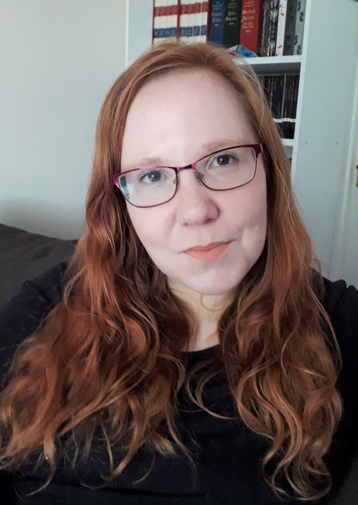

I am a Cognitive Psychologist with research experience in Psycholinguistics,
Social Cognition, Attention/Perception, and Brain Imaging. I currently
work as a Psychology Teaching Associate at the University of Strathclyde (full-time) and as an Associate Lecturer in Mental
Health Sciences at the Open University (part-time)
My teaching interests focus collaborative work and effective use and creation of Open Educational Resources.
I completed a PhD in Psychology at the University of Aberdeen from 2015 to 2019. Prior to this, I obtained an
MSc in Brain Imaging Methods from the University of Glasgow (Distinction) and an MA(Hons) in Psychology from
the University of Aberdeen (1st class). I'm currently studying part-time towards a PgDip in Online and Distance Learning
at the Open University.
To see my full CV, please click here.
